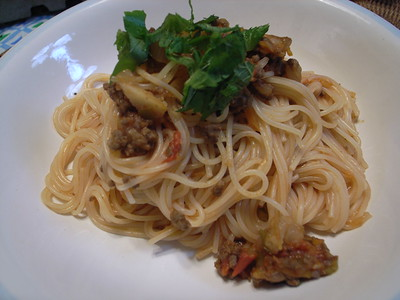

Easy Weeknight Spaghetti

Description
This will be your favourite weeknight friendly spaghetti recipe that
you can enjoy alone or with the family.
Ingredients
- 1 pound dried spaghetti noodles
- 1 pound lean ground meat (ground beef/turkey/italian sausage)
- 3 tablespoons olive oil
- 1 cup chopped onion
- 3 garlic cloves, minced
- 2 tablespoons tomato paste
- 1/2 teaspoon dried oregano
- Pinch crushed red pepper flakes
- 1 cup water, broth, or dry red wine
- 1 can of crushed tomatoes
- Salt and fresh ground black pepper
- Handful of fresh basil leaves, plus more for serving
- Parmesan cheese, for serving
Steps
- Brown the meat: Heat the oil in a large pot over medium-high heat
(we use a Dutch oven). Add the meat and cook until browned,
about 8 minutes. Use a wooden spoon to break the meat into smaller
crumbles as the meat cooks.
- Build the sauce: Add the onions and cook, stirring every once in a
while, until softened, about 5 minutes. Stir in the garlic, tomato paste,
oregano, and red pepper flakes and cook, stirring continuously for about 1 minute.
- Add liquid and tomatoes: Pour in the water and use a wooden spoon to
scrape up any bits of meat or onion stuck to the bottom of the pot.
Stir in the tomatoes, ¾ teaspoon of salt, and a generous pinch of black pepper.
- Simmer: Bring the sauce to a low simmer. Cook uncovered for 25 minutes.
As it cooks, stir and taste the sauce a few times so you can adjust the
seasoning accordingly (see notes for seasoning suggestions).
- Cook spaghetti: About 15 minutes before the spaghetti sauce finishes cooking,
bring a large pot of salted water to a boil. Then, cook the pasta according to
the package directions, but check for doneness a minute or two before the suggested cooking time. Drain.
- To serve: Remove the sauce from the heat and stir in the basil. Toss in the cooked
pasta and leave for a minute so that it absorbs some of the sauce. Toss again, and then
serve with grated parmesan cheese on top.
Home